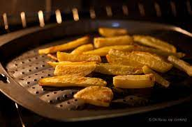

Baked French Fries

Quick bake french fries
A quick snack sure to make the kids happy
Adjust seasoning to taste
Ingredients
- 1 Large patato
- 1 tablespoon olive oil
- 1/2 teaspoon paprika
- 1/2 teaspoon garlic powder
- 1/2 teaspoon chilipowder
- 1/2 teaspoon onion powder
Steps
- Preheat the oven to 450 degrees F (230 degrees C).
- Cut potato into thick wedges. Mix olive oil, paprika, garlic powder,
chili powder, and onion powder together in a medium bowl.
Add potato wedges and toss to coat evenly; arrange on a baking
sheet.
- Bake in the preheated oven,
turning once or twice, until golden brown and crispy, about 45 minutes.
- Enjoy!